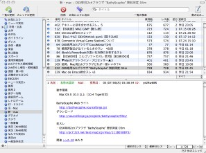
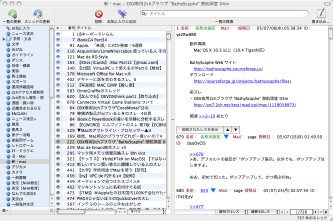

ブラウザの配置を変更する
ブラウザの配置を変更する
ブラウザ内の表示領域（ペイン）の配置を、2ペイン、3ペイン縦置き、3ペイン横置き の中から選択することができます。
- 2ペインと3ペインを切り替えるには、スレッド一覧とスレッドの内容表示領域の境界部分をダブルクリックします。
- 3ペイン表示のときは、スレッド一覧とスレッドの内容表示領域を縦に配置するか（縦置き）、横に配置するか（横置き）を選択できます。「表示」＞「ブラウザの配置」サブメニューから好きな方を選びます。

さらに、掲示板リストを完全に隠すには、「表示」＞「掲示板リストを隠す」と選びます。